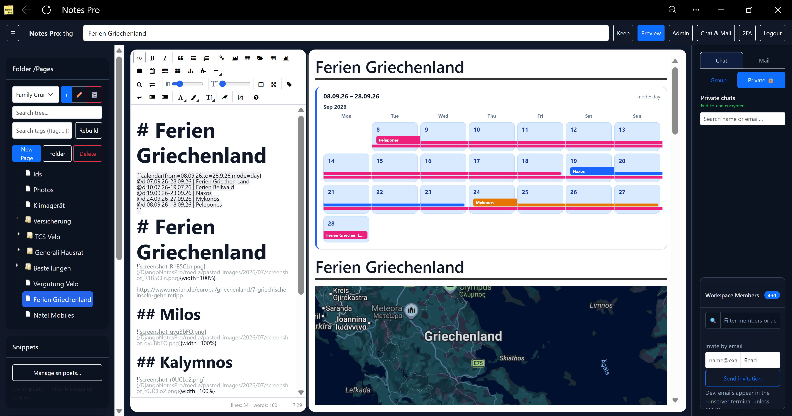

Multi-workspace teams
Separate projects with members, roles, and email invites so the right people see the right notes.
NotesPro
Workspaces, rich markdown, Keep notes, project boards, and encrypted chat — pinned in one place.

Everything NotesPro brings to your team — writing, planning, files, messaging, and security.
Separate projects with members, roles, and email invites so the right people see the right notes.
jsTree navigation with search, drag-and-drop reorder, inline rename, and last-page memory per workspace.
EasyMDE with split edit/preview, synced scrolling, floating TOC, find/replace, snippets, indent, colors, and font size.
Tab-separated sheet blocks with formulas, linked D3 charts, and images in cells — docs that calculate.
Date ranges, timelines, and drag-and-drop boards directly inside markdown — no separate tools.
Start / Suspend / Stop timers, Suspended column, hourly rates, optional cost totals, and wrap layout on small screens.
Indented idea trees in markdown for brainstorms that stay with the page.
Info, success, warning, danger, and note panels for structured documentation.
Sticky notes with pin, colors, checklists, archive, markdown rendering, and drag reorder.
Drag-and-drop file manager; images open in a new tab; local file links for desktop workflows.
WhatsApp-style 1:1 DMs with end-to-end encryption; optional WebRTC P2P; workspace group channel.
Inbox, sent, and compose inside the dashboard — plus NotesPro routing for incoming mail.
TOTP two-factor login; Fernet encryption at rest for pages, chat, mail, and secrets.
Brace tags like {tag: WLAN} with search and live updates across the workspace.
Sidebar, editor, and chat widths remember your layout — desktop and mobile friendly.
Export and import workspaces so documentation and structure move with your team.
Sign in and start writing, planning, and chatting with your team — or clone the project and run it yourself.
Live app: https://thgsoft.online/DjangoNotesPro/